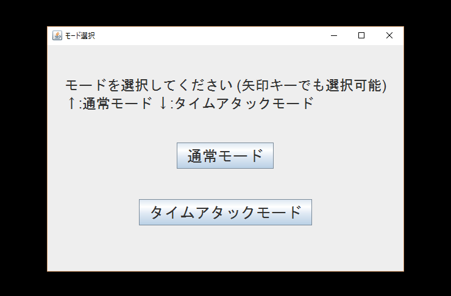
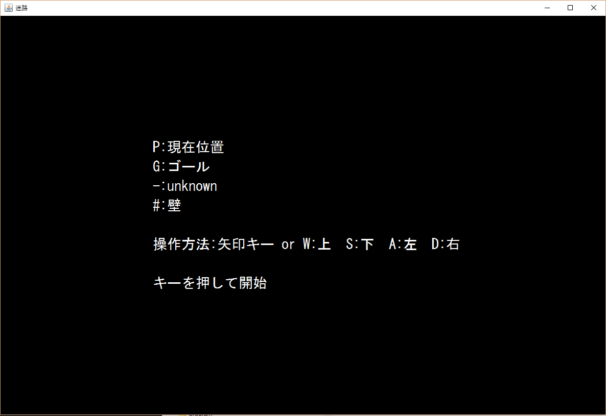
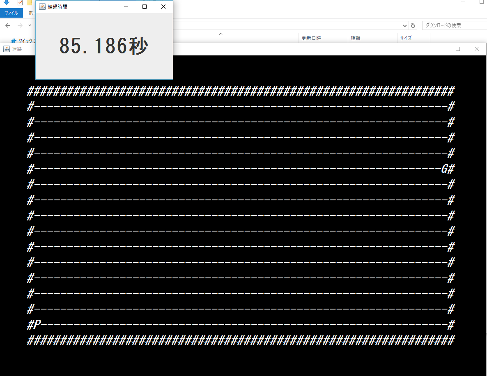
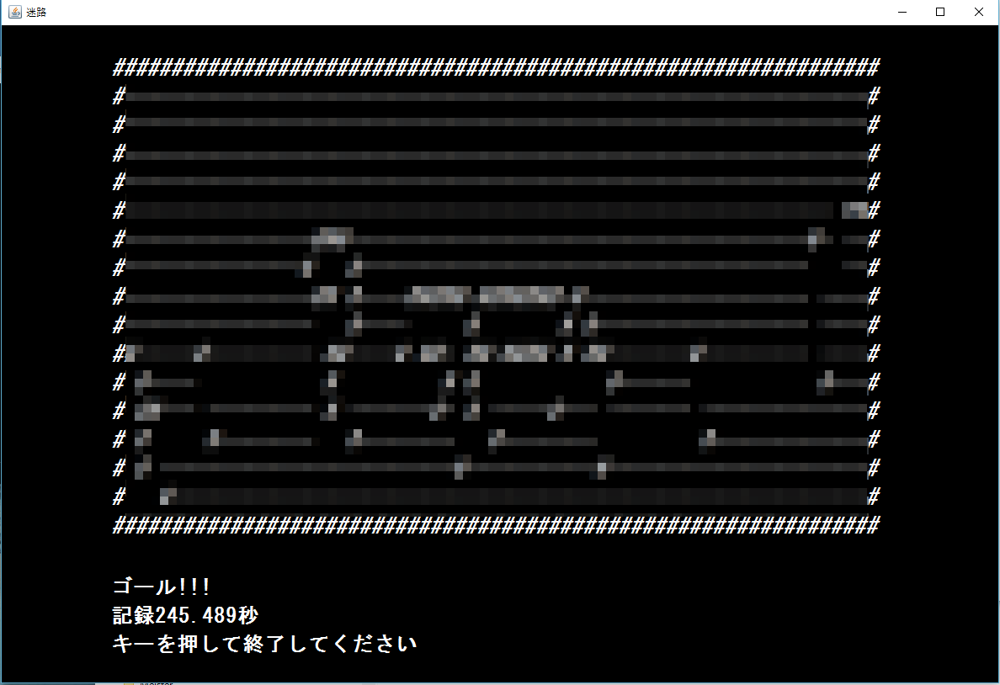

Kuroite
Kuroite
Labyrinthの紹介
Labyrinth
名称説明
迷路(labyrinth)から
使用言語
Java
概要
タイムトライアル迷路
動作例
開始時の状態
使用方法のようにダブルクリックで実行する．  通常モードまたはタイムトライアルモードいずれかを選択する．
迷路の説明画面
 説明を理解したら，何らかのキーを入力して開始する．
迷路の開始画面

迷路ゴールの到達直後

この迷路は，経路を明らかにしながらゴールまでの時間を競争するゲームだ.
おすすめな点
Labyrinthの特徴は，
- StartとGoal地点がランダムである
- 途中経路もランダムである
- 途中経路は，通過するまで隠されている
- 通常モードは時間なし，タイムアタックモードでは時間ありの選択が可能
メリットとしては，以下の項目が挙げられる．
- タイムトライアルモードでは，完走するまでの時間を競争できる
- 操作は
- w: 「↑」
- d: 「→」
- s: 「↓」
- a: 「←」 または
- 矢印キー
- exeファイルをダブルクリックするだけでゲームを開始できる
使用方法
- ここからダウンロードする．
- laby.exeをダブルクリックする．
実行環境
Labyrinthはは以下のソフトを使用している.
- Labyrinthの依存ソフト
- Java
- JDK 8
- 開発動作環境
- 管理者権限
- OS : Windows 10 Pro (ver. 1511)
- システム : x64
- メモリ : 8.00 GB
- 必須動作環境
- 管理者権限
- ソフトのインストールで必要
- Windows 8 以上
- 今後確認予定
- Javaの実行環境がある
制作のきっかけ
Special Thanksの友人によって作品の1つとして「labyrinth」が制作．
現在の仕様
- α版であった，ランダムの迷路を策定した．
- β版であった，タイムトライアルモードの追加やモード選択の機能を策定した．
- 具体的に，exeファイルをダブルクリックするだけで実行できる.
今後の展望・課題
- windows の動作環境確認．
- 2回目以降に迷路の経路が作成されないバグを解消．
最後に
- 本企画に賛同し，labyrinthを制作してくれた友人に感謝申し上げます．
- 本ページの筆者として，labyrinthの魅力を十分に伝えきれていないこともあるかもしれません．今後改良していくつもりでいますので，何なりとお知らせください．
- このツールの掲載写真は，学校で制作しました
- Labyrinth.exeはLaunch4jを使用して制作しました．